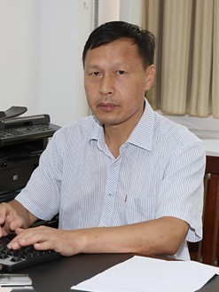
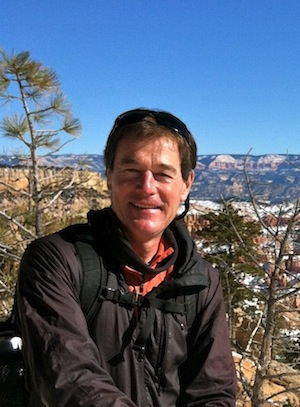
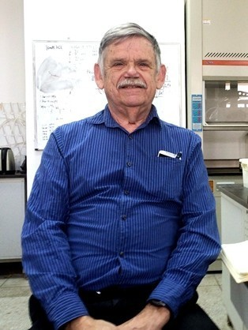

Links to Labs and Researchers

|
Yujie Wang I did not have passion in plant science until my last year in University of Science and
Technology of China at 2010, in which summer I visited Cao's lab in Xishuangbanna Tropical
Botanical Garden. I worked on early angiosperms for a few months as my undergraduate
thesis. Then I continued my master study at the same university and did some experiments on
hydraulic conductance methodology during 2011–2013 in Xishuangbanna. After that, I
visited Tyree lab at Northwest Agriculture & Forestry University as "post-master" for 2
years and headed to Sperry Lab in 2015. Before heading into the science filed, my dream was
becoming a poet, and it seems that I may not realize my dream throughout my life.
|
|  |
Kunfang Cao Dr. Cao is a professor in College of Forestry, Guangxi University, CN. His research focuses
on the plant water relations as well as the photosynthesis, such as the grass root
pressure, tree sap flux, leaf photo damage, and plant evolution. He used to work in
Xishuangbanna Tropical Botanical Garden, where I finished my bachelor thesis from 2010
–2011 and my master thesis from 2011–2013 with his guidance. He enlightened
many Chinese researchers in the field of plant hydraulics, such as Guangyou Hao and
Yongjiang Zhang.
|
|  |
John S. Sperry Dr. Sperry is a professor in Department of Biology, University of Utah, USA. He works on
plant water relations, such as xylem cavitation, water transport, stomatal behavior, and
ecological models. He is my PhD supervisor during 2015–now in University of Utah.
John is now dedicated to introducing plant hydraulics into gas exchange models as water
transport safety is a main limiting factor over stomatal behavior. Such would benefit the
research on gas exchange models from individual scale to land surface scale through
incorporating more logical and realistic water limitation to plants.
|
|  |
Melvin T. Tyree Dr. Tyree used to work in College of Forestry, Northwest Agriculture & Forestry University,
CN. He spent most of his time on plant water relations, such as xylem cavitation, water
transport, and hydraulic methods. He enlightened many famous researchers in the field of
plant hydraulics including John S. Sperry, Missy Holbrook, and Herve Cochard. I was lucky
to visit his lab during 2013–2015 at NWAFU where he guided me into plant hydraulics.
After my graduating as a master, he recommended me to John S. Sperry in University of Utah
to continue my research career.
|